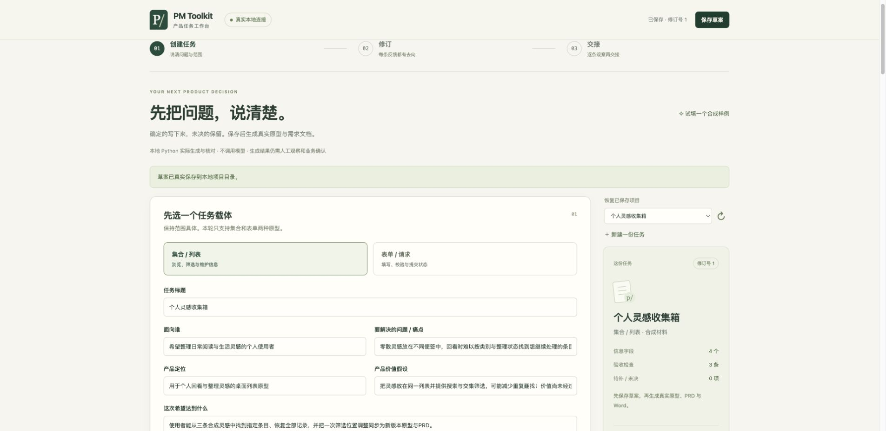

A COMPLETE LOCAL TASK / SYNTHETIC MATERIALS
需求改了，交付材料也跟上。
跟随一个个人灵感收集箱，走完创建、真实生成、筛选位置修订、实际操作、交接下载和重启恢复。先看一轮，再按试用卡亲自完成。
2026-10-28 · 同一合成任务1.0→1.1 · Chrome实际操作采集 · 14帧顺序回放，约90秒。图片与字幕组成回放，非连续录屏；字幕时长不代表完成任务的实际耗时。执行者为代理，真人使用效果未采集。

01 / 14
创建任务
导入个人灵感收集箱，核对合成来源；仅为本次练习明确采用方案，然后保存。
查看完整交接页面 ↗ · 下载文字步骤 ↓ · 下载实际试用卡 ↓
90秒带字幕截图回放
下载MP4 ↓ · 无配音、无音乐；画面来自同一实际任务，说明字幕为新写。支持暂停逐帧阅读，完整输入与结果见试用目录。
HOLD、文件一致性和给定观察覆盖各有含义。工具不会认证真实审批、执行真实性或业务验收；新版本不继承旧通过。Word保留原生成器的字面Markdown表格/代码和基础分页，不宣传为精排报告。自己的试用必须使用自己的观察记录。